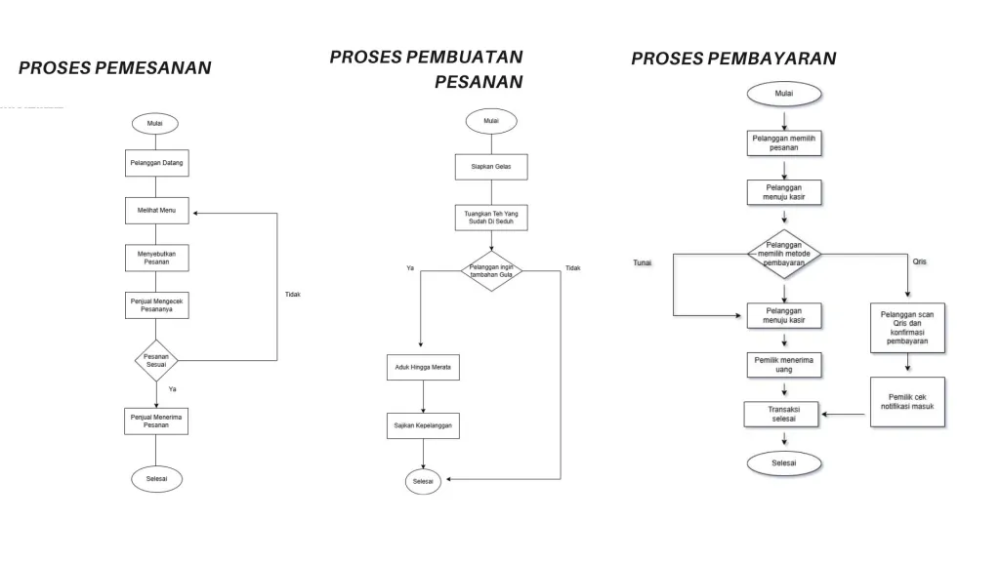
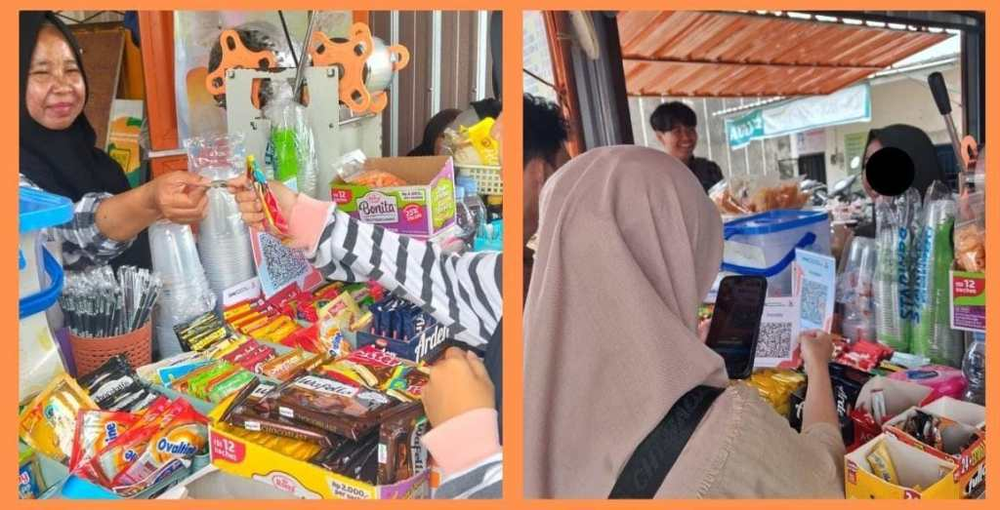
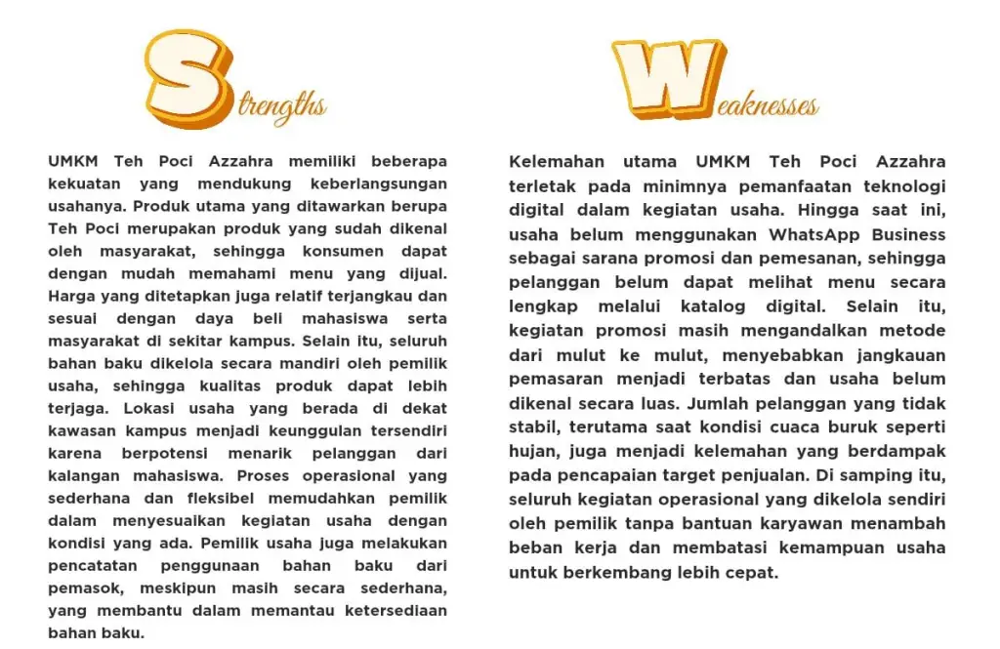
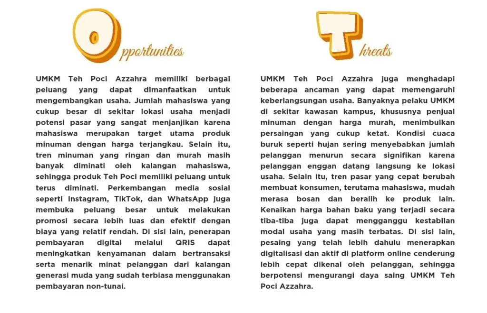
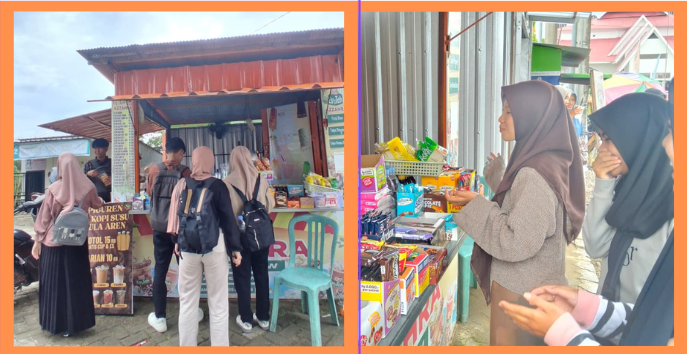
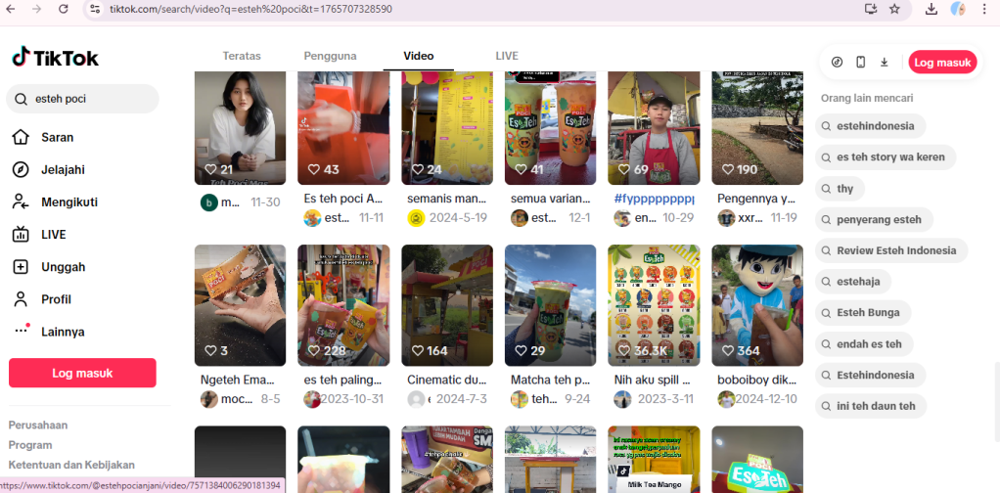
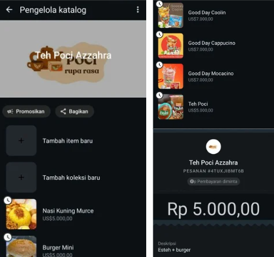

Identifikasi Masalah
Berdasarkan hasil wawancara dan pengamatan terhadap proses operasional UMKM Teh Poci Azzahra, ditemukan beberapa permasalahan utama yang memengaruhi perkembangan usaha. Permasalahan pertama adalah belum digunakannya WhatsApp Business sebagai media pemesanan dan komunikasi dengan pelanggan. Saat ini, pemilik masih menggunakan WhatsApp biasa, sehingga pelanggan belum dapat melihat daftar menu secara lengkap melalui fitur katalog. Akibatnya, informasi mengenai menu yang tersedia belum tersampaikan secara optimal. Permasalahan kedua adalah penurunan jumlah pelanggan pada kondisi tertentu, seperti saat hujan, yang menyebabkan target penjualan tidak tercapai. Hal ini disebabkan karena usaha belum memiliki sistem pemesanan online yang terstruktur atau layanan alternatif yang memungkinkan pelanggan memesan tanpa harus datang langsung ke lokasi. Dalam proses digitalisasi, UMKM Teh Poci Azzahra tidak menerapkan perubahan secara drastis. Pendekatan dilakukan secara bertahap agar pelanggan tetap merasa nyaman. Pemilik usaha tetap melayani pelanggan yang ingin memesan secara langsung, sambil perlahan mengenalkan opsi pemesanan melalui media digital seperti WhatsApp. Pendekatan ini dipilih karena sebagian pelanggan, terutama pelanggan lama, masih terbiasa dengan sistem pemesanan langsung. Dengan memberikan pilihan tanpa paksaan, pelanggan tetap mendapatkan pelayanan yang baik sekaligus mulai mengenal kemudahan pemesanan digital. Seiring waktu, pelanggan—khususnya mahasiswa—mulai terbiasa memesan terlebih dahulu melalui WhatsApp karena lebih praktis dan menghemat waktu.
Pemetaan Proses Bisnis
Dalam operasional sehari-hari, UMKM Teh Poci Azzahra menjalankan proses pelayanan yang masih sederhana dan dilakukan secara manual. Pelanggan umumnya melakukan pemesanan dengan datang langsung ke lokasi usaha, namun sebagian pelanggan juga memesan melalui WhatsApp dengan menghubungi pemilik secara langsung. Pada tahap pemesanan, pelanggan menyampaikan pilihan menu yang diinginkan, kemudian pemilik menerima pesanan tanpa adanya pencatatan khusus.
Setelah pesanan diterima, proses pembuatan minuman dilakukan langsung oleh pemilik usaha. Minuman disiapkan sesuai dengan pesanan pelanggan, mulai dari menyiapkan gelas, menyeduh teh, hingga menambahkan gula atau topping sesuai permintaan. Proses ini dilakukan secara berurutan dan menyesuaikan dengan jumlah pesanan yang masuk pada saat itu.
Proses pembayaran dilakukan setelah minuman selesai dibuat. Pelanggan dapat melakukan pembayaran secara tunai maupun menggunakan metode non-tunai melalui QRIS. Seluruh transaksi pembayaran masih dikelola secara manual tanpa pencatatan digital, sehingga pemilik belum memiliki data penjualan yang tersusun secara sistematis.
Untuk kebutuhan bahan baku, UMKM Teh Poci Azzahra belum memiliki kerja sama atau langganan tetap dengan pemasok tertentu. Pemilik usaha biasanya membeli bahan baku seperti teh, gula, dan perlengkapan kemasan secara mandiri di toko atau warung terdekat sesuai kebutuhan. Hingga saat ini, hanya bahan baku es kristal yang diperoleh dari pemasok tetap karena dibutuhkan secara rutin setiap hari. Pengelolaan persediaan bahan baku masih dilakukan secara manual dan bergantung pada perkiraan pemilik usaha.
Proses Bisnis UMKM
Pemesanan, Pembuatan Pesanan, dan Pembayaran
Proses Pemesanan Pelanggan datang ke Teh Poci Azzahra dan melihat menu yang tersedia. Setelah menentukan pilihan, pelanggan menyampaikan pesanan kepada penjual. Penjual kemudian mengecek kembali pesanan tersebut untuk memastikan kesesuaiannya. Apabila pesanan sudah sesuai, penjual menerima dan melanjutkan proses pembuatan minuman. Namun, jika pesanan belum sesuai, pelanggan akan kembali melihat menu untuk menentukan pesanan yang diinginkan.
Proses Pembuatan pesanan Proses dimulai dengan menyiapkan gelas sebagai wadah minuman. Selanjutnya, penjual menuangkan teh yang telah diseduh sebelumnya ke dalam gelas tersebut. Setelah teh dituangkan, penjual menanyakan atau menyesuaikan apakah pelanggan menginginkan tambahan gula. Jika pelanggan menginginkan tambahan gula, penjual menambahkan gula ke dalam minuman lalu mengaduk hingga merata. Apabila pelanggan tidak menginginkan tambahan gula, proses langsung dilanjutkan ke tahap penyajian. Setelah minuman siap, penjual menyajikan Teh Poci kepada pelanggan dan proses pembuatan pesanan dinyatakan selesai.
Proses Pembayaran Proses transaksi pembayaran yang dilakukan oleh pelanggan. Proses dimulai ketika pelanggan memilih pesanan dan kemudian menuju kasir. Setelah itu, pelanggan diminta memilih metode pembayaran, apakah menggunakan tunai atau QRIS. Jika memilih tunai, pelanggan menyerahkan uang kepada kasir, kemudian pemilik menerima pembayaran tersebut dan transaksi dinyatakan selesai. Sementara itu, jika pelanggan memilih menggunakan QRIS, pelanggan akan melakukan pemindaian kode QR dan mengonfirmasi pembayaran melalui aplikasi. Setelah itu, pemilik akan mengecek notifikasi pembayaran yang masuk. Jika pembayaran terverifikasi, transaksi dianggap selesai. Proses kemudian berakhir setelah semua langkah terselesaikan.


Kebutuhan Digitalisasi
Berdasarkan hasil pengamatan terhadap proses bisnis serta tantangan yang dihadapi UMKM Teh Poci Azzahra, penerapan digitalisasi menjadi langkah strategis untuk meningkatkan efisiensi operasional dan kualitas pelayanan. Keterbatasan dalam promosi dan sistem pemesanan, serta fluktuasi jumlah pelanggan pada kondisi tertentu, menunjukkan perlunya pemanfaatan teknologi digital yang sederhana dan sesuai dengan skala usaha.
Digitalisasi diharapkan mampu membantu pelaku usaha dalam memperluas jangkauan pemasaran, mempermudah proses pemesanan, serta menjaga stabilitas penjualan meskipun terjadi kendala eksternal seperti cuaca atau keterbatasan kunjungan pelanggan secara langsung.
- Penggunaan WhatsApp Business sebagai media komunikasi dan pemesanan yang lebih terstruktur, sehingga pelanggan dapat melihat menu, harga, dan informasi usaha secara jelas.
- Penerapan pemesanan jarak jauh berbasis online melalui WhatsApp Business sebagai solusi alternatif bagi pelanggan yang tidak dapat datang langsung ke lokasi usaha.
- Pemanfaatan media sosial seperti Instagram dan TikTok sebagai sarana promosi digital untuk meningkatkan jangkauan pemasaran dan daya tarik usaha.
Analisis SWOT


Digital Business Value Activity
Pada UMKM Teh Poci Azzahra diwujudkan melalui pemanfaatan teknologi digital dalam berbagai aktivitas bisnis yang bertujuan menciptakan nilai tambah bagi usaha. Penggunaan media sosial seperti Instagram dan TikTok dimanfaatkan sebagai sarana promosi digital untuk memperkenalkan produk kepada masyarakat secara lebih luas, khususnya kepada mahasiswa di sekitar kawasan kampus. Melalui konten promosi yang sederhana namun menarik, usaha dapat meningkatkan tingkat pengenalan merek serta menarik minat pelanggan baru di tengah persaingan yang semakin ketat. Selain aktivitas promosi, penerapan WhatsApp Business juga menjadi bagian penting dari Digital Business Value Activity. WhatsApp Business digunakan sebagai media komunikasi dan pemesanan yang lebih terstruktur dengan pelanggan. Fitur katalog memungkinkan pelanggan melihat daftar menu dan harga secara jelas, sehingga memudahkan mereka dalam menentukan pilihan tanpa harus bertanya langsung kepada penjual. Di sisi lain, layanan pesan membantu mempercepat proses respon dan meningkatkan kenyamanan pelanggan dalam bertransaksi. Pemanfaatan kegiatan bisnis berbasis digital diharapkan dapat memberikan pengaruh positif terhadap perkembangan UMKM Teh Poci Azzahra, baik dalam meningkatkan kualitas pelayanan maupun mendorong penjualan. Melalui penerapan digitalisasi, usaha tetap dapat menjangkau pelanggan pada kondisi tertentu, seperti saat cuaca kurang mendukung, yang sebelumnya sering menyebabkan penurunan jumlah pembeli. Dengan adanya Digital Business Value Activity, operasional usaha menjadi lebih efektif sekaligus membantu meningkatkan daya saing dan keberlanjutan UMKM Teh Poci Azzahra di tengah persaingan.



Business Implementation Roadmap
Berdasarkan kondisi operasional UMKM Teh Poci Azzahra, permasalahan yang dihadapi, serta peluang yang muncul dari penerapan digitalisasi, diperlukan roadmap implementasi yang jelas dan bertahap. Tujuan dari roadmap ini adalah agar penerapan teknologi tidak terasa rumit bagi pemilik usaha dan dapat dijalankan secara perlahan sesuai dengan kemampuan UMKM. Dengan tahapan yang terstruktur, digitalisasi diharapkan dapat langsung memberikan dampak positif terhadap kegiatan operasional sehari-hari.
Fase 1: Persiapan
Pada tahap awal, fokus utama adalah mempersiapkan kondisi internal usaha. Pemilik UMKM Teh Poci Azzahra mulai dengan meninjau kembali proses bisnis yang selama ini masih dilakukan secara manual, seperti proses pemesanan, pencatatan penjualan, dan cara promosi usaha. Dari proses ini, dapat diidentifikasi bagian-bagian yang paling membutuhkan dukungan teknologi digital. Selain itu, pemilik usaha juga mulai mempelajari penggunaan teknologi sederhana yang akan diterapkan, seperti WhatsApp Business dan media sosial. Pemilihan platform digital disesuaikan dengan kebutuhan usaha, mudah digunakan, serta tidak memerlukan biaya besar agar tetap sesuai dengan skala UMKM.
Fase 2: Implementasi
Setelah tahap persiapan dilakukan, UMKM Teh Poci Azzahra mulai memasuki tahap penerapan digitalisasi. Pada fase ini, WhatsApp Business mulai digunakan sebagai media utama untuk komunikasi dan pemesanan pelanggan. Fitur katalog dimanfaatkan untuk menampilkan menu dan harga secara jelas sehingga pelanggan dapat dengan mudah memilih produk yang diinginkan. Selain itu, pemesanan jarak jauh mulai diterapkan agar pelanggan tetap dapat melakukan pembelian tanpa harus datang langsung ke lokasi, terutama pada kondisi tertentu seperti saat hujan. Di sisi promosi, media sosial seperti Instagram dan TikTok mulai digunakan untuk membagikan konten sederhana berupa foto produk atau informasi promo. Tahap ini menjadi inti dari digitalisasi karena langsung memengaruhi aktivitas operasional dan interaksi dengan pelanggan.
Fase 3: Edukasi Pelanggan
Setelah sistem digital berjalan, langkah selanjutnya adalah mengenalkan perubahan tersebut kepada pelanggan. UMKM Teh Poci Azzahra dapat menginformasikan penggunaan WhatsApp Business dan pemesanan online melalui media sosial maupun secara langsung kepada pelanggan yang datang ke lokasi. Pada tahap ini, pendekatan dilakukan secara bertahap agar pelanggan dapat beradaptasi dengan nyaman. Pemilik usaha tetap melayani pelanggan yang ingin memesan secara langsung, sambil perlahan mengarahkan mereka untuk mencoba pemesanan melalui media digital. Dengan cara ini, pelanggan tidak merasa dipaksa dan tetap mendapatkan pelayanan yang baik.
Fase 4: Evaluasi
Setelah digitalisasi berjalan, pemilik UMKM Teh Poci Azzahra mulai melakukan evaluasi sederhana terhadap dampaknya. Evaluasi dilakukan dengan mengamati respon pelanggan, jumlah pesanan yang masuk melalui WhatsApp, serta pengaruh promosi media sosial terhadap penjualan harian. Meskipun hasilnya belum sepenuhnya signifikan, pemesanan melalui WhatsApp mulai menunjukkan peningkatan, terutama pada jam-jam sibuk. Selain itu, media sosial membantu usaha ini lebih dikenal oleh pelanggan baru di sekitar lingkungan kampus. Dari hasil evaluasi tersebut, pemilik usaha menyadari bahwa digitalisasi perlu terus dikembangkan secara bertahap, bukan diterapkan secara instan. Beberapa langkah pengembangan yang direncanakan antara lain memperbaiki tampilan katalog produk di WhatsApp, meningkatkan konsistensi konten promosi di media sosial, serta mempertimbangkan penambahan metode pembayaran digital. Evaluasi yang dilakukan secara berkelanjutan diharapkan dapat memastikan bahwa digitalisasi benar-benar memberikan manfaat nyata bagi usaha.
Penutup
Berdasarkan pembahasan yang telah dilakukan, UMKM Teh Poci Azzahra memiliki peluang besar untuk berkembang melalui penerapan digitalisasi yang sesuai dengan skala usahanya. Produk yang sudah dikenal, harga yang terjangkau, serta lokasi usaha yang strategis di sekitar kampus menjadi modal utama dalam menarik pelanggan. Namun, keterbatasan pemanfaatan teknologi digital dan fluktuasi jumlah pelanggan masih menjadi tantangan yang perlu dihadapi. Melalui pemanfaatan WhatsApp Business, sistem pemesanan online sederhana, dan media sosial sebagai sarana promosi, UMKM Teh Poci Azzahra berupaya meningkatkan kualitas pelayanan sekaligus memperluas jangkauan pasar. Digitalisasi yang dilakukan secara bertahap dan realistis diharapkan tidak hanya membantu meningkatkan efisiensi operasional, tetapi juga mendukung keberlanjutan UMKM Teh Poci Azzahra di tengah persaingan usaha di era digital. Dukungan pelanggan dan konsistensi dalam pengembangan menjadi kunci agar transformasi digital ini memberikan dampak jangka panjang.